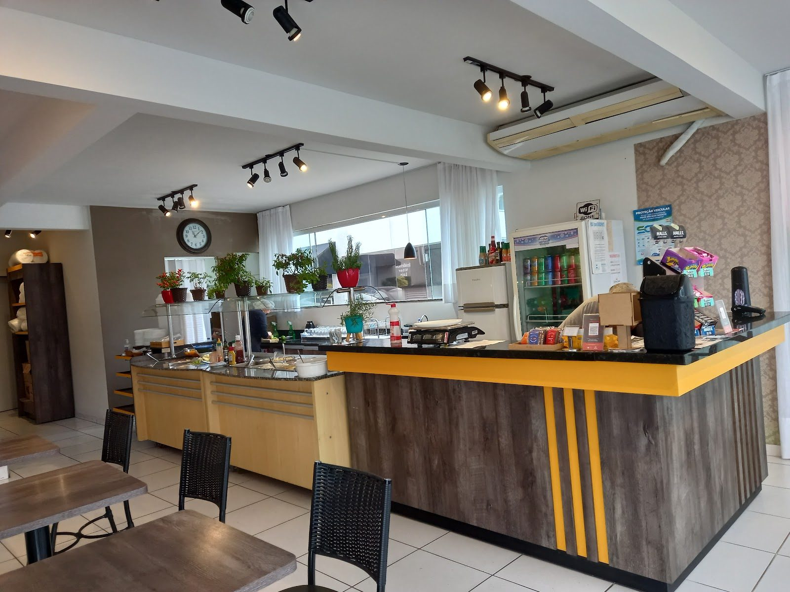
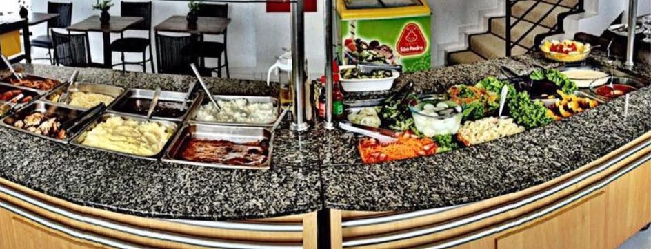

Almoço caseiro com buffet a quilo ou livre
De segunda a sábado, na sala 05 da Rua Alois Erthal, 1250, no Centro de Guabiruba.
Hoje no buffet
segunda-feira
Modelo · o restaurante atualiza- carne do dia
- massa
- saladas
- sobremesas
buffet a quilo ou livre · almoço com sobremesa
Quem almoça aqui avalia
4,8
289 avaliações no Google
Excelente atendimento, sem falar que a comida é sensacional 🥰
5★ · Google · out/2025Ótimo atendimento e comida boa! Principalmente as sobremesas variadas 😋
5★ · Google · mai/2025Além da comida ser muito boa é saber que existe ainda um atendimento super humano desejo muito sucesso vcs merecem
4★ · Google · jun/2025
Dica: pelo Google, o horário mais cheio é quarta ao meio-dia, com espera de até 15 minutos.
O salão


Onde fica
Rua Alois Erthal, 1250
Sala 05 · Ed. Vitor Luis
Centro · Guabiruba/SC
- Banheiro acessível para cadeira de rodas
- CEP 88360-000
Horário do almoço
| Segunda | a partir das 11h |
|---|---|
| Terça | a partir das 11h |
| Quarta | a partir das 11h |
| Quinta | a partir das 11h |
| Sexta | a partir das 11h |
| Sábado | a partir das 11h |
| Domingo | fechado |